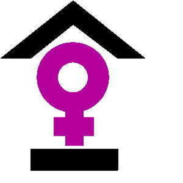
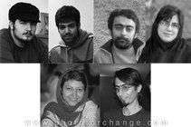
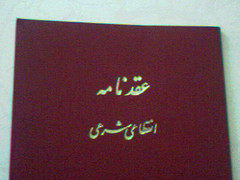
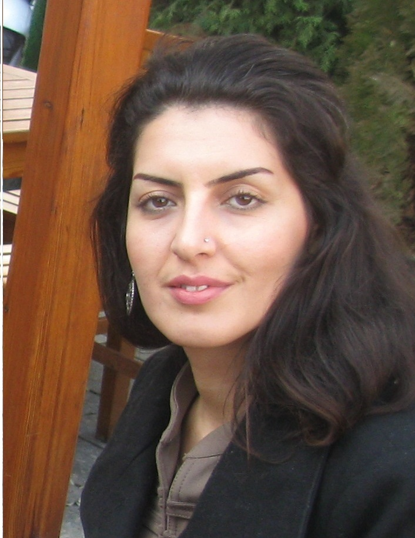
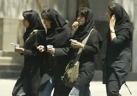
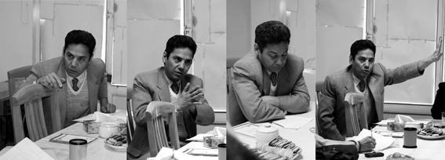

تغییر برای برابری
تغییر برای برابریقربانیان خشونت خانگی با موانعی بی شمار برای یافتن و نگهداری مسکن رو به رو هستند. زنانی که از نظر مالی به افرادی که آنها را مورد خشونت قرار می دهند، وابستهاند و یا اموالشان در کنترل فرد سو استفاده کننده است، برای ترک خانه امکان مالی کافی ندارند و باید خطر خیابانخوابی را به جان بخرند...
پذيرش > واژه كليدها > صفحه بندی > ستون وسط
ستون وسط
مقالهها
-

خانه های امن راهی برای گریز از خشونت خانگی
8 دسامبر 2011 -

یادمان می ماند
16 مه 2009دلم نیکی نیکزاد رو بدون خرج کردن خساست می خواد اونم به وسعت دنیا. این اتفاق ها گاهی اوقات تلنگری به آدم ها میزنه تا بیشتر حواسمون به تنهایی هامون باشه و یادمون می ندازه نیکزادی، مریمی، پرستویی و .. هم هست که تنهایی هامون رو با عشق پر کنه
-
کمپین روبان سیاه در حمایت از زنان سعودی
11 نوامبر 2009حالا، ۱۹ سال بعد گروهی از زنان سعودی به دنبال رسیدن به حقوقی برابر با مردان، کمپینی به نام کمپین روبان سیاه را افتتاح کردهاند. این کمپین از تمام حامیان در سراسر جهان میخواهد که به نشانه خواست برابری زنان و مردان و در قدم اول حذف قیمومیت مردان در عربستان سعودی، روبانی سیاه به دست خود ببندند. در حال حاضر، یک زن اجازه ندارد بدون مرد در جامعه حاضر شود.
-

برابری خواهانی که برابری را زندگی می کنند
9 مارس 2010با امضای سند ازدواج، زن برخی از حقوق مدنی و معنوی خود را از دست میدهد و حقوق مادی همچون مهریه و نفقه را به دست میآورد. شاید برخی بگویند که همسرانشان هیچ گاه به منع آنها از حقوقشان بر نمی آیند و این درست نیست که اول زندگی با این شروط برای خود حرف و حدیث بتراشند.اما آیا باید بپذیریم که از حقوق خود تنها با احتمالات بگذریم؟
-
 کی می خواهیم بپذیریم که قربانیِ تجاوز نه یک شیء جنسی در دسترس یا دور از دسترس که یک آدم است؟
کی می خواهیم بپذیریم که قربانیِ تجاوز نه یک شیء جنسی در دسترس یا دور از دسترس که یک آدم است؟
13 ژوئيه 2011با توجه به موارد متعدد تجاوزهای مشابه در کشورهای مختلف جهان، و صرف نظر از نتیجه ی این محاکمه ی بخصوص، آگاهی به چند و چون "فرهنگ تجاوز" ی که جوامع ما را بیمار کرده از طریق نگاهی دقیق تر به مصداق های آن می تواند کمکی باشد به درمان.
-

پروژه آزادی خواهانه ی" آمارگی"* و پینار سلک / سیما حسین زاده
2 آوريل 2012آمارگی یکی از سازمانهای مستقل فمینیستی مهم در ترکیه است که در سال 2001 به همت تعدادی از زنان فمینیست با خط مشی صلح طلبی ، آنتی میلیتاریسیم و مخالفت با ملی گرایی با تأکید بر سیستم مدیریتی غیر متمرکز و افقی به همان شکلی که از روز اول آغاز به کار کمپین یک میلیون امضاء مدنظر فعالان ایرانی بود تأسیس شد.این سازمان از بدو تاسیس تا کنون در زمینه چاپ مطالب تئوریک و اکتیویستی در زمینه سیاست و نظریه فمینیسم 20 شماره فصلنامه نیز در کارنامه فعالیتهای خود دارد. پینار سلک یکی از پایه گذاران این سازمان و از فمینیست های مشهور ترکیه به دلیل چهره ی ضد نظامی گری و صلح طلب خود است...
-
اولین هفته ی پاییز با زنان در خبر: حذف چادر برای متهمان زن؛ واکنشی سراسیمه به یک اعتراض / نوید محبی
28 سپتامبر 2011ستون گزارش تحلیلی این هفته از روزهای پایانی شهریور تا هفته ی اول مهرماه را شامل می شود. موضوع پوشش مجرمین زن در محاکم قضایی،گسترش خشونت علیه زنان، ادامه ی محدودیت های برای دانشجویان با آغاز سال جدید تحصیلی، آثار مخرب معضل قانونی ازدواج زنان ایرانی با مردان،تشدید فشار ها بر فعالان حقوق زنان و حکم سنگین 11 سال حبس برای نرگس محمدی و قتل فجیع یک روزنامه نگار مکزیکی از جمله خبرهایی هستند که در گزارش پیش رو بدان پرداخته شده است.
-

دومین هفته تیرماه، ادامه اصرار بر حذف زنان از عرصه اجتماع
13 ژوئيه 2011معاون فرهنگی و اجتماعی وزیر علوم با تأکید بر اینکه بحث عفاف و حجاب در دانشگاه باید در داخل خود دانشگاه حل و فصل شود، گفت: از رسانه ها خواهش می کنیم که اصطلاح تفکیک جنسیتی را به کار نبرند و فضاسازی بر روی تفکیک جنسیتی صورت نگیرد. وی مخالفان این طرح را در سه طیف ِ ضد انقلاب ، رقبای سیاسی و طیف استحاله طلب نامید. خواجه سروی با حفظ موضع قیم مابانه و پدرسالارانه، خود و مدافعان این طرح را معلمانی نامید که به دنبال رای و قدرت نیستند بلکه معلم هستند.
-
تجاوز جنسی، پاسخ به کدام نیاز؟
30 ژوئن 2011, بوسيلهى pariکارشناسان رشته های روانشناسی ،روانپزشکی و جامعه شناسی هر کدام تئوری های خاصی را در بررسی علل تجاوزات جنسی ارائه داده اند. برخی از تئوریسنهای روانپزشکی میل به تجاوز جنسی را مادرزادی می دانند و تولید بیش از حد هورمون تسترون، برخی تجاوز جنسی را از زاویه رابطه قدرت و جنسیت می بینند و اعتقاد دارند که خشونت و تجاوز مردان وسیله ای برای اعمال قدرت بر زنان است.
-

از سلطانی، ستوده، محمّدی می گوییم ...
15 مارس 2012سخن گفتن از حق و دفاع از شعله آن در تاریکی وظیفه ماست؛ این را از چشم ها و خنده های وکلایمان آموختیم، پیش از آنکه قانون را بدانیم. مجموعه زیر یادداشت هایی کوتاه از اعضای خانواده، موکلان و دوستانی است که به احکام صادره برای عبدالفتاح سلطانی، نسرین ستوده و نرگس محمدی معترضند و خواهان تغییر آن هستند. با امید فردایی که در آن زنجیری نباشد مگر زنجیره دستانِ آزاد ما تا در کنار یکدیگر، آنچه را می خواهیم بسازیم.
0 | ... | 270 | 280 | 290 | 300 | 310 | 320 | 330 | 340 | 350 | ... | 450